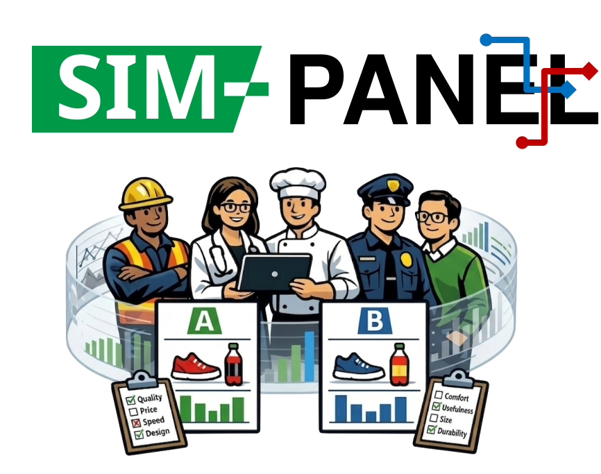
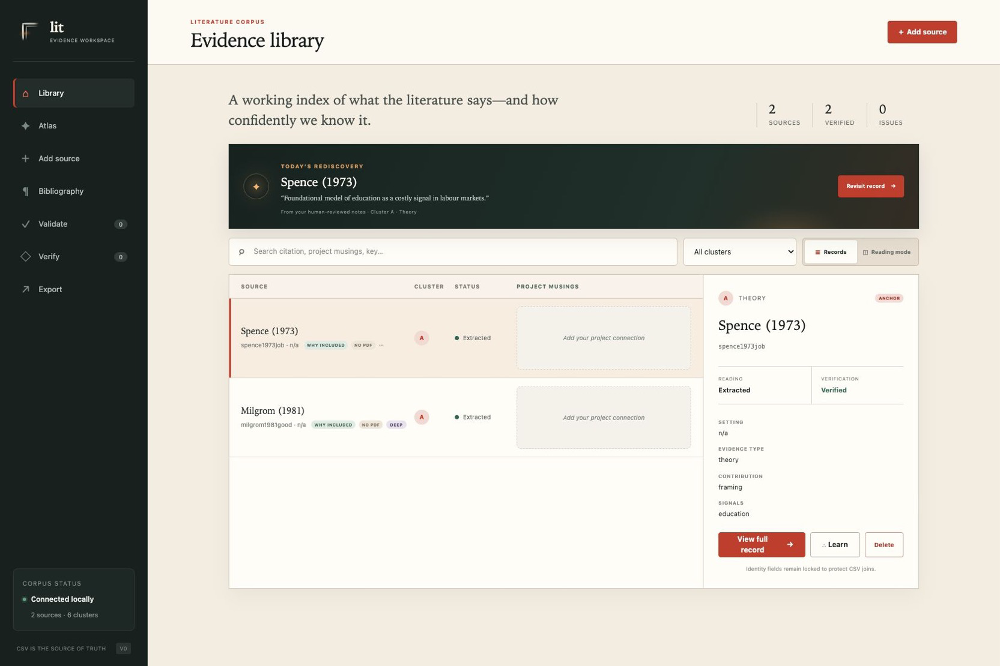
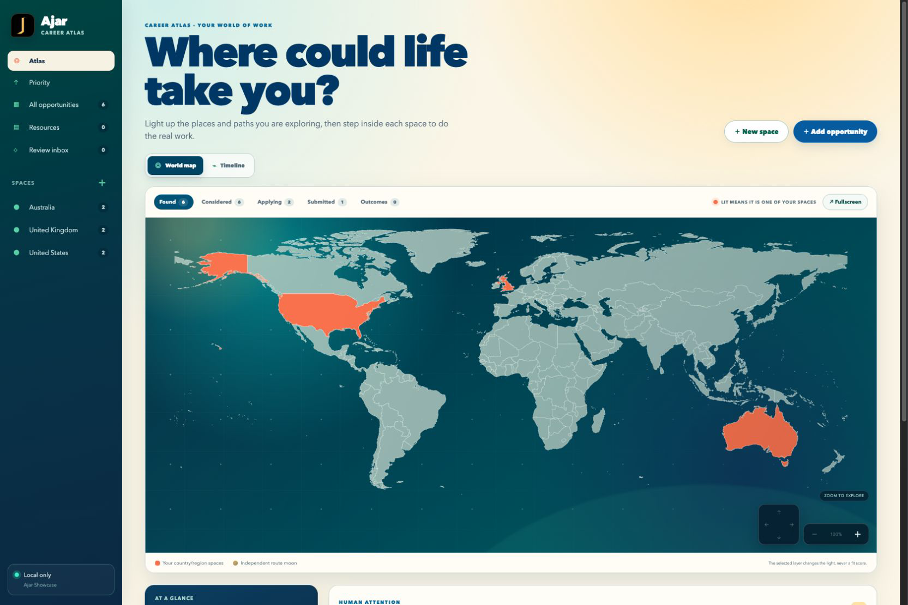

|
Bingchen Wang I am an independent researcher working at the nexus of machine learning and economics. I am interested in how incentives, information, and institutions shape the development and use of AI systems, and how AI, once deployed, reshapes them in turn. My recent work studies incentive design for collaborative machine learning and the reconstruction of population preferences using ensembles of large-language-model (LLM) agents. Previously, I worked on mechanism design and collaborative learning systems at the National University of Singapore, and earlier on political economy projects at the University of Hong Kong. I hold an MPhil in Economics (Distinction) from the University of Oxford, where I worked under Prof. David Hendry and Prof. Jennifer Castle and contributed to Climate Econometrics, a B.A. in Mathematics–Statistics from Columbia University, and a B.Sc. (Hons) in Computing Mathematics from the City University of Hong Kong. |
Research
I arrived at AI by way of economics and statistics. That route has left its mark on the questions my projects tend to start with: Who bears the cost of building a system, and what would make participation worthwhile? What can the available data actually identify and justify? How do people behave once they know a model is judging them? How do institutional rules and norms shape the use of AI and vice versa? These questions recur at different points in a system's life. The map below shows where my work engages with them.
Synthetic agents make empirical inquiry less costly, but their validity is exactly the question. These instruments probe the gap between AI agents and the humans and institutions they stand in for, before institutional use.
SIM-PANEL open source
Synthetic A/B testing (RCT and self-selection) with agent panels for resource-constrained evaluation pipelines.
ResumeBench in progress
An agentic fictitious-resume generator for synthetic auditing of LLM bias mechanisms in hiring, without access to proprietary data.
AI-mediated hiring in design
Screening algorithms and AI-assisted applications are changing both sides of the labour market at once: how candidates signal, how employers read those signals, and whether either still trusts the formal channel.
At the design stage. I am looking for institutional partners for the survey and field components.
Across these projects, a recurring practical concern is access: many interesting questions become difficult to pursue when they require proprietary data, substantial compute, or institutional infrastructure. Where possible, I try to reduce the fixed cost of asking a serious question without trivialising the problem itself.
Publications |
|
|||
|
|||


{kind=link}
SoftwareResearch software |
|
P2P
Pre-release research software P2P is a modular system for reconstructing population preferences from LLM agent ensembles. P2P constructs diverse proxy agents via structured prompting, then selects a compact weighted subset to match target survey distributions—no finetuning, no demographic data, under a dollar per survey*.
Status: Pre-release (demo available upon request). |

SIM-PANEL
Public research software ( site / docs / code / release ) SIM-PANEL is a reproducible toolkit for synthetic panel-style datasets and agent-product evaluation workflows. It provides YAML-configured generation, schema-validated JSONL artifacts, random/manual/self-selection policies, real-data ingestion, benchmark subset construction, and comparison diagnostics for simulation and evaluation pipelines. Status: Public v0.1.0 pre-release. Documentation and code are available online. |
|
Cowork tools I build tools around the human workflow first, then design ways for AI to participate in them. AI can search, read and contribute, but the human remains the central arbiter of interpretation, verification and judgement. These are tools designed for working with AI that remain useful without it. |
|
 litEvidence workspace Literature reviews fail when extraction is tedious and notes go unstructured, so a corpus becomes unauditable long before it becomes large. lit keeps a schema-driven corpus in reviewable CSV, BibTeX and Markdown. It allows for agent-assisted reviews, but reserves verification, interpretation and judgement for the human. It also brings study notes and cross-note searching into the same workspace, enabling review and learning to coalesce. A reading atlas lets users log reading time, track progress and earn accolades along the way. Status: small-scale prototyping. Demo on request. |
 ajarCareer research workspace Job searching can be an exhausting and nerve-racking process: fragmented information, scarce feedback, constantly changing market conditions and end-to-end tracking that falls entirely on you. ajar runs on your machine, separates factual opportunity records from human-owned decisions, and keeps the reasons behind past choices as durable context. On its own, ajar is a one-stop platform to organise materials and applications. With an AI agent, you set search criteria, review what it finds, make decisions and offer feedback that shapes the next round. Status: small-scale prototype. Demo on request. |
Selected WritingOccasional public letters and commentary on policy, social coordination, and institutions.
|
Presentations
|
Beyond ResearchOutside research, I write occasional essays on art, history, and society, usually starting from a particular object or place—the earliest an art-historical study of a Tang sancai figurine at the Metropolitan Museum of Art. Some are in English, some in Chinese. Recent: "AI-Free Is the New Black", on the coming counter-trend. Earlier pieces are collected in Outside the Box. |
|
© 2026 Bingchen Wang. Original template by Jon Barron. |